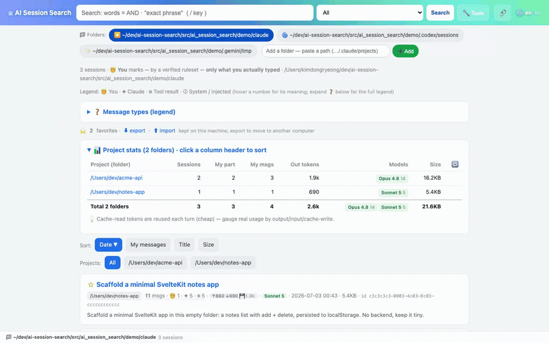
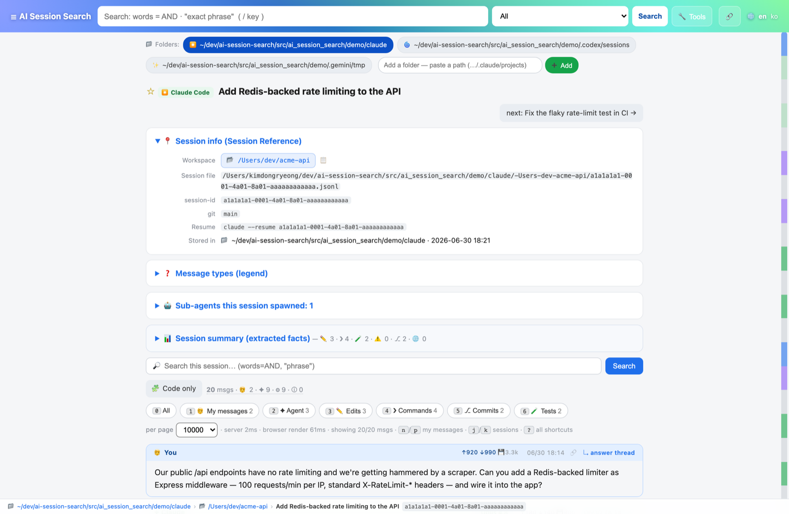
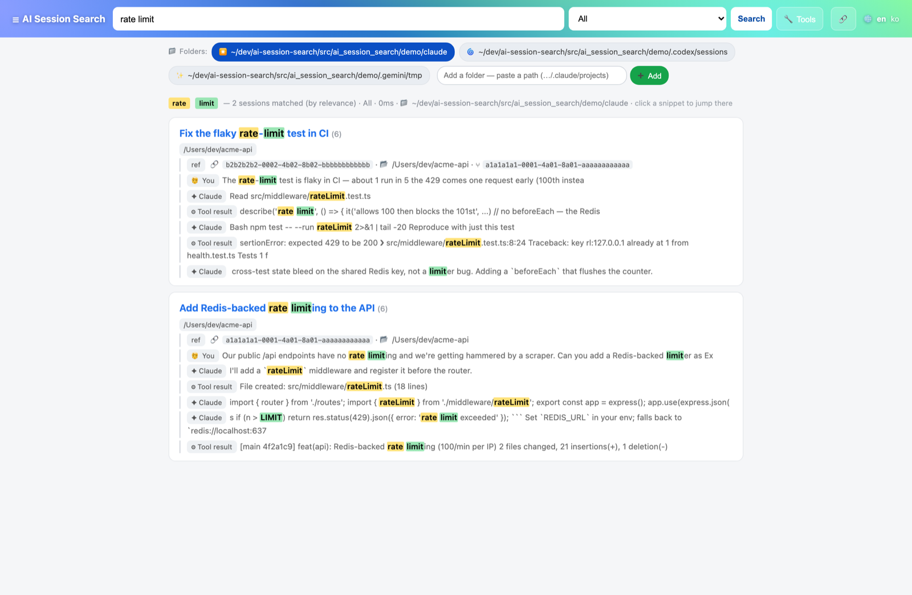
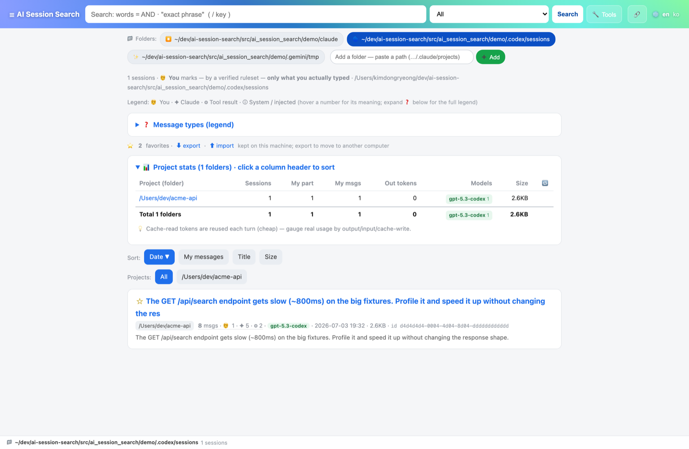

A local, read-only, zero-dependency viewer & full-text search for your Claude Code, Codex & Gemini CLI history — and the only one that knows which words were actually yours.
or pipx install ai-session-search && aiss --demo

The insight
Open any Claude Code, Codex, or Gemini log and nearly everything is tagged role: user. But ~95% of it is machine noise — tool results, injected IDE context, system reminders, task-notifications, subagent briefs. Every other viewer shows them as if you typed them.
AI Session Search uses an empirically audited, adversarially verified ruleset per provider, so only text a human really typed is marked 🧑 You. That one fix is what makes search, reading, and agent recall land on real intent.

Feature tour

Relevance-ranked, per-term color highlighting, matching within a turn, across nearby turns, or anywhere in a session. Searches message text, tool-call args, and code bodies. Field queries: file: cmd: code: error: role:me id:, plus -exclude and "phrases".
Auto-discovers all three, each parsed with the same attribution rigor and shown with a provider badge, model mix, token totals, and a resume command. Grouped by workspace, with sortable per-project stats.

“Code only” re-gathers every generated block and file edit — yours and the agent's — with context and one-click copy.
Gmail-style j/k/n/p, filter chips on digit keys, / to search, ? for the map.
Light/dark, a live language switcher, Korean built in, and any locale you add with no rebuild.
Deterministic digests: files touched, commands, tests, commits, PR links — no LLM, no guessing.
Bookmarks saved to a local file with export/import, so they survive a machine change.
Sidechain / Task / workflow transcripts listed per session; orchestrator briefs never mislabelled as you.
For coding agents
The same search engine is exposed four ways so your next agent can look up how you actually solved something before — over faithful transcripts, with correct attribution, no embeddings, no database, no indexing step. All local, all read-only.
aiss --mcp — stdio JSON-RPC. search_sessions, get_session, list_recent_sessions.
One-shot aiss --search / --get / --sessions (--json) — a perfect Bash tool.
/api/search, /api/session, /api/sessions on the local server.
A drop-in skill that teaches an agent when to recall past work before re-solving it.
Download
Grab a build, double-click, and it opens in your browser. Nothing is uploaded — ever.
Have Python? pipx install ai-session-search then
aiss --demo. · Full docs on GitHub ↗